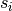
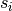

Boltzmann machine is much like a spin glass model in physics. In short words, Boltzmann machine is a machine that has nodes that can take values, and the nodes are connected through some weight. It is just like any other neual nets but with complications and theoretical implications.
Boltzmann Machine and Physics
To obtain a good understanding of Boltzmann machine for a physicist, we begin with Ising model. We construct a system of neurons  which can take values of 1 or -1, where each pair of them  and is connected by weight .
which can take values of 1 or -1, where each pair of them  and is connected by weight .
This is described as a Boltzmann machine, or spin glass in physics. Spin glass is a type of material that is a composite of many spins pointing in different directions. In principle spin glass is hard to calculate.
Neverthless we can make simplifications to this model. We require each spin to be connected to its nearest neighbours only. Such a model is called Ising model.
Intuitively, those spins can be viewed as tiny magnets that can point up or down only. Each spin interacts with its neighbours. These interactions are calculated in terms of energy,
Why do we care about energy? For a physics system, low energy means stable while high energy means unsatble since it might automatically change its configuration into low energy state. That being said, a system of spins is stable if the energy of all the interactions is low.
To find out a low energy state, one of the numerical methods is Monte Carlo method.
States
We have been talking about the word state without being specifying the definition of it. In fact we can think of two different pictures of states. For the purpose of this discussion, we consider a system of  particles and each of the particle has
particles and each of the particle has  degrees of freedom.
degrees of freedom.
The first strategy is to set up a dimension space and describe the state of the whole system with on point in such a space. The distribution of the points can be determined by the corresponding categories of distribution functions. This is dubbed as  space.
space.
The second strategy is to use a space of dimensions where each particle of the system is a point in such a space. Such a space is called  space. In space, the distribution of each particle state is calculated using BBGKY chain.
space. In space, the distribution of each particle state is calculated using BBGKY chain.
Once the macroscopic propertities of the system is assigned, the all possible states that leads to this macroscopic state show up with equal probability, aka, principle of equal a priori probabilities.
Partition Function
Partition function  is useful as we calculate the statistical properties of the network,
is useful as we calculate the statistical properties of the network,
With partition function defined, the distribution of states is
Application of Boltzmann in Learning
In many cases, we would like the machine to learn about the pattern of input. Probabilistically speaking, we are working out the probability distribution of the input data using a Boltzmann machine,
Or for reasons of log-likelihood, we use the ration of them
In terms of Boltzmann machine weights, which are to be determined, the log probability is proportional to the energy
Since we are looking for the weights, the updating rule should be equivalent to the gradient
System Message: WARNING/2 (\frac{ \partial \Delta \log p }{ \partial w_{ij} } \sim \langle s_i s_j\rangle_{\mathrm{data}} - \langle s_i s_j \rangle_{\mathrm{\model}},
)
latex exited with error
[stdout]
This is pdfTeX, Version 3.14159265-2.6-1.40.18 (TeX Live 2017) (preloaded format=latex)
restricted \write18 enabled.
entering extended mode
(./math.tex
LaTeX2e <2017-04-15>
Babel <3.10> and hyphenation patterns for 84 language(s) loaded.
(/usr/local/texlive/2017/texmf-dist/tex/latex/base/article.cls
Document Class: article 2014/09/29 v1.4h Standard LaTeX document class
(/usr/local/texlive/2017/texmf-dist/tex/latex/base/size12.clo))
(/usr/local/texlive/2017/texmf-dist/tex/latex/base/inputenc.sty
(/usr/local/texlive/2017/texmf-dist/tex/latex/ucs/utf8x.def))
(/usr/local/texlive/2017/texmf-dist/tex/latex/ucs/ucs.sty
(/usr/local/texlive/2017/texmf-dist/tex/latex/ucs/data/uni-global.def))
(/usr/local/texlive/2017/texmf-dist/tex/latex/amsmath/amsmath.sty
For additional information on amsmath, use the `?' option.
(/usr/local/texlive/2017/texmf-dist/tex/latex/amsmath/amstext.sty
(/usr/local/texlive/2017/texmf-dist/tex/latex/amsmath/amsgen.sty))
(/usr/local/texlive/2017/texmf-dist/tex/latex/amsmath/amsbsy.sty)
(/usr/local/texlive/2017/texmf-dist/tex/latex/amsmath/amsopn.sty))
(/usr/local/texlive/2017/texmf-dist/tex/latex/amscls/amsthm.sty)
(/usr/local/texlive/2017/texmf-dist/tex/latex/amsfonts/amssymb.sty
(/usr/local/texlive/2017/texmf-dist/tex/latex/amsfonts/amsfonts.sty))
(/usr/local/texlive/2017/texmf-dist/tex/latex/anyfontsize/anyfontsize.sty)
(/usr/local/texlive/2017/texmf-dist/tex/latex/tools/bm.sty) (./math.aux)
(/usr/local/texlive/2017/texmf-dist/tex/latex/ucs/ucsencs.def)
(/usr/local/texlive/2017/texmf-dist/tex/latex/amsfonts/umsa.fd)
(/usr/local/texlive/2017/texmf-dist/tex/latex/amsfonts/umsb.fd)
! Undefined control sequence.
<argument> \model
l.14 ... s_j \rangle_{\mathrm{\model}},\end{split}
! Undefined control sequence.
<argument> \model
l.14 ... s_j \rangle_{\mathrm{\model}},\end{split}
[1] (./math.aux) )
(see the transcript file for additional information)
Output written on math.dvi (1 page, 576 bytes).
Transcript written on math.log.
We could update our weights using a rule compatible with the gradient of the probability.
System Message: WARNING/2 (\Delta w_{ij} \sim \langle s_i s_j\rangle_{\mathrm{data}} - \langle s_i s_j \rangle_{\mathrm{\model}}.
)
latex exited with error
[stdout]
This is pdfTeX, Version 3.14159265-2.6-1.40.18 (TeX Live 2017) (preloaded format=latex)
restricted \write18 enabled.
entering extended mode
(./math.tex
LaTeX2e <2017-04-15>
Babel <3.10> and hyphenation patterns for 84 language(s) loaded.
(/usr/local/texlive/2017/texmf-dist/tex/latex/base/article.cls
Document Class: article 2014/09/29 v1.4h Standard LaTeX document class
(/usr/local/texlive/2017/texmf-dist/tex/latex/base/size12.clo))
(/usr/local/texlive/2017/texmf-dist/tex/latex/base/inputenc.sty
(/usr/local/texlive/2017/texmf-dist/tex/latex/ucs/utf8x.def))
(/usr/local/texlive/2017/texmf-dist/tex/latex/ucs/ucs.sty
(/usr/local/texlive/2017/texmf-dist/tex/latex/ucs/data/uni-global.def))
(/usr/local/texlive/2017/texmf-dist/tex/latex/amsmath/amsmath.sty
For additional information on amsmath, use the `?' option.
(/usr/local/texlive/2017/texmf-dist/tex/latex/amsmath/amstext.sty
(/usr/local/texlive/2017/texmf-dist/tex/latex/amsmath/amsgen.sty))
(/usr/local/texlive/2017/texmf-dist/tex/latex/amsmath/amsbsy.sty)
(/usr/local/texlive/2017/texmf-dist/tex/latex/amsmath/amsopn.sty))
(/usr/local/texlive/2017/texmf-dist/tex/latex/amscls/amsthm.sty)
(/usr/local/texlive/2017/texmf-dist/tex/latex/amsfonts/amssymb.sty
(/usr/local/texlive/2017/texmf-dist/tex/latex/amsfonts/amsfonts.sty))
(/usr/local/texlive/2017/texmf-dist/tex/latex/anyfontsize/anyfontsize.sty)
(/usr/local/texlive/2017/texmf-dist/tex/latex/tools/bm.sty) (./math.aux)
(/usr/local/texlive/2017/texmf-dist/tex/latex/ucs/ucsencs.def)
(/usr/local/texlive/2017/texmf-dist/tex/latex/amsfonts/umsa.fd)
(/usr/local/texlive/2017/texmf-dist/tex/latex/amsfonts/umsb.fd)
! Undefined control sequence.
<argument> \model
l.14 ... s_j \rangle_{\mathrm{\model}}.\end{split}
! Undefined control sequence.
<argument> \model
l.14 ... s_j \rangle_{\mathrm{\model}}.\end{split}
[1] (./math.aux) )
(see the transcript file for additional information)
Output written on math.dvi (1 page, 508 bytes).
Transcript written on math.log.
It’s easily noticed that the first term is basically Hebbian learning rule, where similar activities enhences the weight. The second term is the some unlearning rule where we have to reduce some weights to relax to the actual working network. Simply put, we kill some connects that have negative effects on our learning network.
Without Hidden Units
In principle, a learning process can be as simple as a one on one map from the data to all the neurons in Boltzmann machine.
Suppose we have a data set of an image which has 10 pixels and each pixel can take values of 0 and 1. We simply construct a network of 10 neurons. To remember the most prominent features of the image with this network, we update the weights and bias of the network to miminize the energy. Once done with minimization, the network we have could be used to generate similar images with similar features.
With Hidden Units
The complexity of the previous model seems to be low. To introduce more degree of freedom, we introduce the hidden units.
Hinton and Sejnowski worked out a algrimth for Boltzmann machine in 1983. The energy based learning rule for Boltzmann machine has two phases, the clamped phase (Phase+) and free phase (Phase-).
- Clamped phase: we attach the data to the visible units and initialize the hidden units to be some random states.
- Then we update the hidden units so that the energy is minimized with clamping.
- We calculate the average over all pairs of units, i.e., .
- Repeat for all data sets of training.
- Free phase: no clamping and all units are the same and mutatable.
- Relax the state of the units to low energy state.
- Find out .
- Repeat N times.
With and found, we use the update rule (1).
For some reference, Hinton has a set of lectures on Coursera. He also has a lecture for more effective algrimths: More efficient ways to get the statistics.
Minimizing Energy of Ising Model is Hebbian Learning
Hebbian Learning Rule
Simply put, neurons act similarly at the same time would be more likely to be connected.
A energy minimization procedure would be the same as Hebbian learning rule. Suppose we pick out two spins, and , the connected weight would be positive in order to have lower energy  . For spins with different signs, negative weight would be the choice to make sure the energy is lower. This is similar to Hebbian learning rule.
. For spins with different signs, negative weight would be the choice to make sure the energy is lower. This is similar to Hebbian learning rule.
Programming
To code a Boltzmann machine, we need a protocal.
 Intelligence
0.0.8
Intelligence
0.0.8